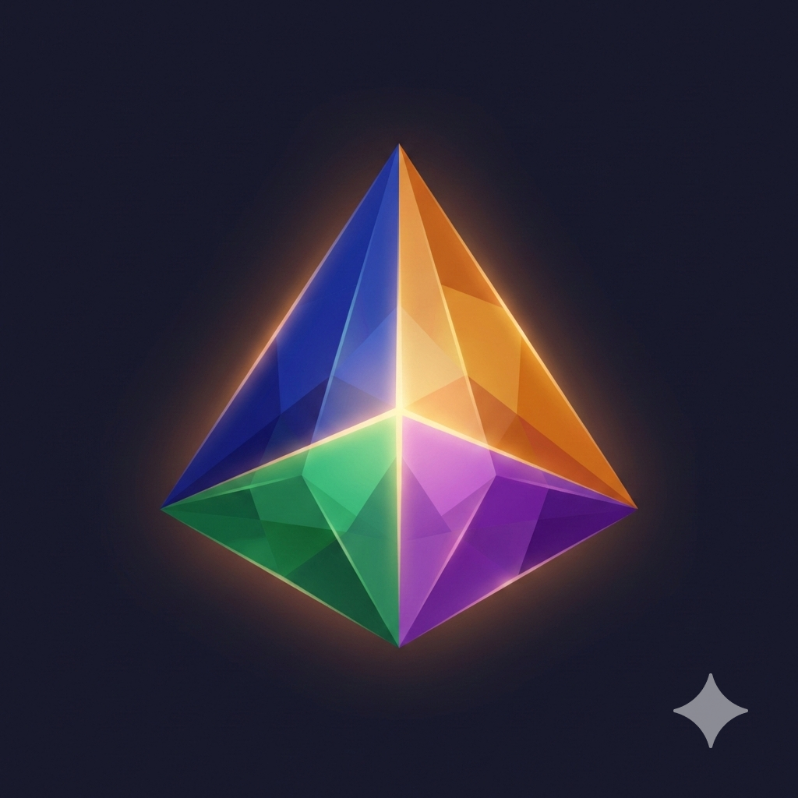

backlog → triage (agent assigns) → todo → auto-dispatch → doing │ │ │ ┌───────────────┤ │ ▼ ▼ │ review partial-done │ │ (resume from │ ▼ checkpoint) │ done │ └── clarify → human replies → re-triage
v2.1.0 —
curl -fsSL https://tetora.dev/install.sh | bash